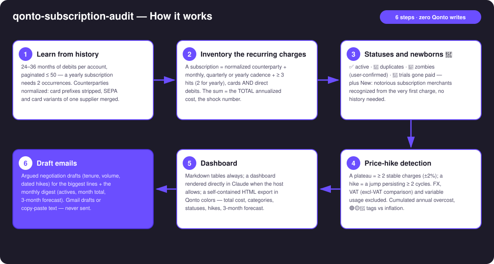
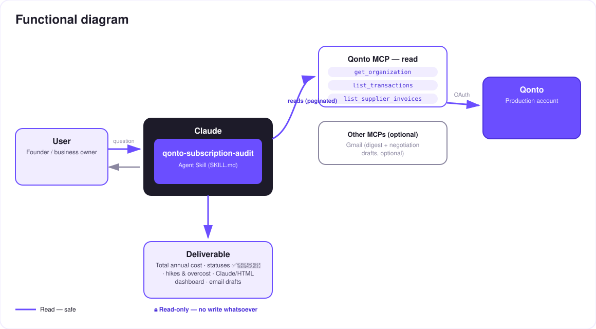

The complete recurring-spend audit — what you pay, what you forgot, what quietly went up, and what just started.
Subscriptions pile up, prices creep up silently, trials convert, nobody cancels. The skill runs the COMPLETE recurring-spend audit over 24–36 months:
Every recurring charge (cards AND direct debits), monthly/quarterly/yearly cadence, the TOTAL annualized cost — the shock number — and a status per line: ✅ active · 👥 duplicate · 🧟 zombie (user-confirmed) · 🎣 trial gone paid.
Notorious subscription merchants — SaaS, AI, course platforms (Systeme.io, Skool…), hosting & domain registrars (OVH, Gandi…) — recognized from the very first charge, no history needed; then round amounts, label hints, 2nd occurrence ~30 d → "probable subscription, to confirm". Catch the trial before it becomes rent.
Price plateaus (±2 %, a jump persisting ≥ 2 cycles), FX and VAT excluded, 🟢🟡🔴 tags vs inflation, ⚪ variable usage kept apart — plus the cumulated annual overcost of all hikes.
A dashboard built directly in Claude, exportable as a self-contained HTML file in Qonto colors; an argued negotiation email and a monthly digest — Gmail drafts, never sent without you.
Would someone use this on a Monday morning? It's the audit every founder postpones because it means opening 30 months of statements. Here it's one prompt.
| Prerequisite | Detail | Required |
|---|---|---|
| Qonto production account | Adapts to any organization — get_organization first, nothing hardcoded | ✅ |
| Country | Country-agnostic core: inventory, statuses and hike detection work on every Qonto country (FR, DE, ES, IT…). Only the inflation benchmark is localized, reference always stated | ℹ️ detected |
| Qonto MCP connected | Official connector (claude.ai / Claude Desktop), OAuth login | ✅ |
| ≥ 24 months of history | A YEARLY subscription only shows with 2 occurrences: on a 12-month window, annual renewals fly under the radar. Below that: honest degradation — the skill states what may be missing | ⭕ recommended |
| Gmail MCP | Detected dynamically: present → monthly digest + negotiation drafts; absent → copy-paste text. The core needs Qonto only | ⭕ optional |

PAYPAL *, SUMUP *…) stripped; SEPA and card variants of the same supplier merged into one linelist_supplier_invoices has the matching invoice — a tax change is never blamed on the supplieremitted_at · pagination ≤ 50 everywhere
Zero Qonto writes: this skill only reads — risk-free by construction. The only outbound artifacts are email drafts (negotiation, digest) that the user reviews, edits and sends (or not) themselves. To protect a subscription with a capped virtual card, that's the qonto-subscription-guardian skill.
| Status | Criterion | Meaning | Proposed action |
|---|---|---|---|
| ✅ Active | Regular cadence, usage confirmed by the user | The budget's backbone | Watch, alert on the next hike |
| 👥 Duplicate | Two suppliers in the same tool category (2 meeting tools, 2 hosts…) | One of the two is extra | Keep one, quantify the saving |
| 🧟 Zombie | Charged ≥ 6 months, zero variation, dormant category — a hypothesis | Probably unused | Cancel after user confirmation |
| 🎣 Trial gone paid | Recent first full-price charge, preceded by nothing or a token amount | Silent conversion | Immediate decision: keep or cut |
| 🌱 New (probable) | Notorious merchant recognized from the 1st charge (no history) · round amount · label · 2nd occ. ~30 d | A subscription being born, to confirm | "New" section — catch it early |
| ⚪ Variable usage | High variability (API, cloud, ads) | A rising bill ≠ a rising price | Implicit price when isolable, said plainly otherwise |
| Tag | Criterion | Proposed action |
|---|---|---|
| 🟢 Normal indexing | Annualized increase ≤ general inflation | None — mentioned for the record |
| 🟡 Above inflation | Annualized increase > inflation | Listed in the report, email on request |
| 🔴 Aggressive hike | ≥ 3× inflation or ≥ 10 % in one step | Negotiation email proposed by default |
Cross-cutting alerts: 💥 double charge (< 72 h) · 🔁 cadence switch (often a disguised repricing).
| Output | Format | When |
|---|---|---|
| Conversation reply | Markdown tables: shock number, portfolio by status, New 🌱 section, hikes, variable usage kept separate | Always — the baseline |
| Dashboard in Claude | Rendered directly in the conversation (artifact): annual-cost counter, category breakdown, statuses ✅👥🧟🎣🌱, hikes with deltas, 3-month forecast | When the host allows it (claude.ai, Claude Desktop, Claude Code) |
| HTML export | The same dashboard as one self-contained file, Qonto palette (violet #6B4EFF / black #1D1B29 / white, light/dark) | On request — keep it or share it |
| Emails | Gmail draft (MCP present + explicit consent) or copy-paste text: negotiation + monthly digest | Never sent without the user |
The ≤ 3-minute demo attached to the PR walks through: the problem → the live inventory and statuses → the hikes and the overcost → the dashboard building itself in Claude with the shock number, and the 🌱 New section catching a fresh trial → wrap-up. It runs live on a real production account.
| Idea | Effort | Note |
|---|---|---|
| Continuous watch: alert on the first charge of a confirmed 🌱 or a new plateau | Low | The monthly ritual becomes automatic |
| Public-price benchmark: compare to the supplier's published pricing | Medium | Also catches over-paying grandfathered plans |
| Auto-label detected subscriptions in Qonto | Low | The portfolio reads in the app too |
| Post-negotiation follow-up: verify the price actually dropped | Low | Closed loop — the price series already exists |
Capped-card bridge: chain into qonto-subscription-guardian | Low | The audit finds, the guardian protects |
qonto-subscription-guardian territory